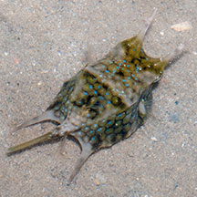
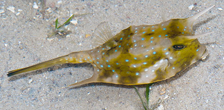
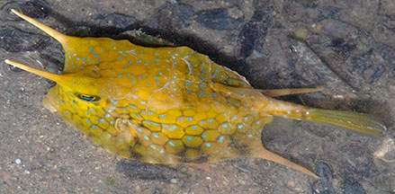
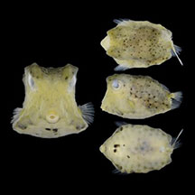

|
|
| fishes text index | photo index |
| Phylum Chordata > Subphylum Vertebrata > fishes > Family Ostraciidae |
| Longhorn
cowfish Lactoria cornuta Family Ostraciidae updated Sep 2020 Where seen? This strange four-pronged boxy fish is sometimes seen on some of our shores, among seagrasses. Elsewhere, it is found in shallow muddy, sandy sheltered areas, in harbours and estuaries, in weedy areas near rocks and reefs. Juveniles are said to form small groups on shallow mudflats, near river mouths and in brackish water. While adults are solitary and shy. Features: To 40-50cm, the ones seen was about 10-15cm long. Body cubical boxy, which is enclosed in a protective hard shell (carapace) made up of bony plates with gaps for the various tiny fins, the tail and the mouth. The cowfish got its name for the pair of projecting 'horns' above its eyes. There is a second pair of horns sticking out of the bottom, back end of the fish. The tail fin is very long, sometimes almost as long as the body. Colours green, olive to yellowish, with dark blotches and tiny blue spots. |
 Tanah Merah, Aug 06 |
 Cyrene, Jun 08 |
 Tanah Merah, May 09 |
 Juvenile. Tuas, Apr 17 Photo from Singapore Biodiversity Records 2017:97 |
| Baby cowfish: Juveniles lack the horns in the front and back. What does it eat? It feeds on tiny animals hidden in the sand. The fish uncovers these titbits by blowing away the sand with its downturned tubular mouth. Human uses: Elsewhere, these amazing fishes are sadly harvested and dried to make into ornaments for the tourist trade. |
| Longhorn cowfishes on Singapore shores |
On wildsingapore
flickr
|
| Other sightings on Singapore shores |
Links
References
|